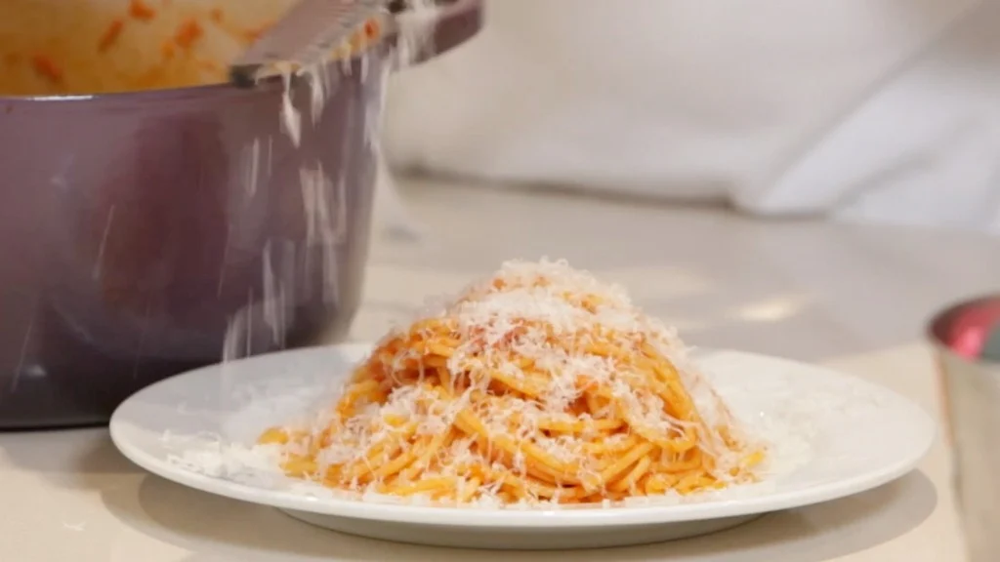

Marco Pierre White: Mother's Pasta

Description:
"This has got to be one of the easiest pasta dishes in the world, without a doubt one of my favorites." - Marco Pierre White
Ingredients
- Olive oil
- 1 onion
- 2 cloves of garlic
- 8 rashers of streaky bacon
- 400g of spaghetti
- Tomato puree
- Parmesan
Steps:
- Ensure you have a pot of boiling water and a hot frying pan ready simultaneously before starting.
- Add dried pasta to pot of boiling water. (Approx 10 minutes)
- (Optional) Add a small amount of olive oil to boiling water.
- Add olive oil to frying pan.
- Add onions & streaky bacon to frying pan.
- Add garlic to frying pan during the final few minutes of cooking.
- Add tomato puree to frying pan. Mix everything together on low heat.
- Remove pasta from boiling water and add into frying pan mixture.
- Ensure everything is mixed evenly.
- Serve and enjoy!